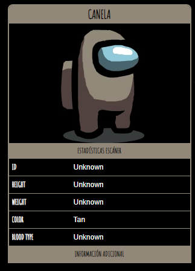

Canela

Canela
era un color en Among Us que el jugador podía personalizar.
El color fue retirado debido a que las personas daltónicas lo confundieron con otros colores.
Innersloth dijo que estaba 'un poco demasiado cerca de 'Marrón, Naranja o Blanco'.
Curiosidades
- Los únicos restos oficiales de Among Us de Canela están en el servidor de Discord de Innersloth
como un emoji personalizado.
- A diferencia de Verde Fuerte , no hay forma de jugar como Canela, incluso con la edición de código..
- Verde aparece en el ícono "Discutir" cuando comienza una Reunión de Emergencia o cuando se reporta un cadáver, junto con Naranja.
- Se hace referencia a Canela en el juego de "Henry Stickmin Completing the Mission". La medalla de "Assemble the Crew" implica que el jugador
tiene que encontrar todos los colores de Tripulantes repartidos por el juego y colocarlos en las ranuras.
Cuando se encuentra a Canela, en lugar de estar incluido en las 'ranuras', se perfora, haciendo referencia al hecho de que fue eliminado de Among Us.